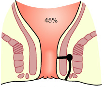
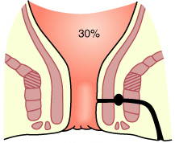
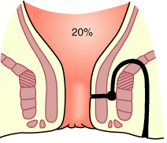
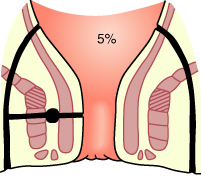
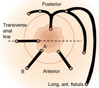

Fistula - in - ano
DEFINITION
A tract connecting the two epithelial surfaces from anal canal or
rectum to the skin around the anus.
D I A B M I M
INCIDENCE
See anorectal abscess.
D I A B M I M
AETIOLOGY
Pathogenesis
Most begin following anorectal abscess
- i.e initiating at the anal canal glands at the dentate line.
A fistula connects two epithelial surfaces
- so an abscess that heals and leaves a tract not communicating with
rectum is, by definition, just a sinus.
Sieve
Infective
=
most common
- usually post-anorectal abscess as above
- rarely TB / actinomycosis.
Other
possible causes
Crohn's.
Carcinoma.
Trauma - esp obstetric.
Foreign body
Radiation damage
D I A B M I M
BIOLOGICAL BEHAVIOUR
Pathophysiology
1. Most fistulas forms from the
abscess track that formed it.
- its path is determined by local anatomy.
- most commonly tracks in fascial / fatty planes.
--> mostly straight to perianal skin.
--> sometimes less straightforward, even horse-shoeing in
ischiorectal space.
2. A Hydrostatic system
- Primary opening = high-pressure source passing through the conduit
- Conduit = fistula
- Secondary opening = low pressure, at perianal skin.
These principles guide modern alternatives to surgery,
Classification
1. Fistulas usually fall under 4
main categories:
The Park's Classification
1. Intersphincteric
- most common 45%
- runs in a line between
sphincters.
- often straightforward to perianal skin
- sometimes go upwards, even to colon in pelvis

2. Transphincteric
- transverses both sphincters 30%
- through ischiorectal fossa to end at perianal skin
- if passes through muscle at low level, readily treated.
- if a higher track through thick muscle, more difficult.

3. Suprasphincteric
- uncommon, difficult and
need an experienced surgeon.
- travels upwards through intersphincteric plane
- then laterally over puborectalis
- then down through ischiorectal fossa to perineal skin
- +/- a high blind track heading up parallel to the rectum
--> hence can't divide all sphincters or incontinence results.

4. Extra-sphincteric
- rare, thankfully
- perianal skin to rectal wall, piercing levator.
- main track completely outside sphincter apparatus.
- often by carcinoma, foreign body, trauma, crohn's.
- difficult, lengthy treatment, often involving a colostomy.

[High vs Low]
Low-level
Open into anal canal below the anorectal ring.
High-level
Open into anal canal at/above the anorectal ring.
In general high fistulas have more serious aetiological
associations.
By Park's classification both high trans-sphincteric and
supralevator fistulae qualify as 'high'.
- and intersphincteric falls into either depending where it meets
the anal canal.
2. OR : Clinical Classification:
Simple vs Complex
Simple
Intersphincteric and low tracts
Complex
by anatomy: high
trans-sphincteric fistulas, supra-sphincteric, extrasphincteric,
multi-tract, blind extensions, horse-shoes, anterior sphincters in
women (complex anatomy here)
by aetiology: IBD,
radiation, malignancy
Natural history
Seldom, if ever, close permanently without surgical aid.
D I A B M I M
MANIFESTATIONS
Symptoms
Often begin as an anorectal abscess.
Chronic seropurulent discharge.
- irritates the skin
- causes discomfort
History may date back years.
Pain is not a symptom if discharge may escape
- otherwise becomes occluded, with increasing pain until eruption.
--> may present as repeat anorectal abscesses.
Systemic
Don't forget to ask about Crohn's and other associations.
Signs
EUA
A single opening is usual
- 3.5 - 4cm from the anus usually.
Subcutaneous induration may be traced from the external opening to
the anal canal.
- digital exam may reveal a palpable nodule in the anal canal wall
(the primary opening).
There may be more than one external opening.
- usually grouped close to one side of midline
- where superficial healing and recurrent abscess drainage has
occurred.
Almost invariably there is just one internal opening.
Goodsall's rule
Fistulae with an external opening relating to anterior half of anus tend to
have direct tracts.
Those with an external opening relating to posterior half of anus tend to have curving tracts
- these more common.
- and may be of the horseshoe variety.

Picture note:
A = internal primary orifice.
B = external opening anterior to this line.
Probing
A probe may be passed through into the anal canal opening.
Used to be that fistulas were probed outside of theatre
- this accomplishes nothing but reawakening a dormant infection.
- a sudden move on behalf of the pt meant a problematic new internal
opening.
Postpone probing until the pt is anaesthetised in theatre and be very gentle.
D I A B M I M
INVESTIGATIONS
Sigmoidoscopy
Examine for inflammatory bowel disease.
Imaging
USS and MRI for mapping complex fistulae.
- USS + hydrogen peroxide is as accurate as MRI
Fistulography is old fashioned and poor and replaced by USS and MRI
CT has poor soft tissue differentiation.
D I A B M I M
MANAGEMENT
Key Points
Surgical Management is usually required.
1. Must identify relation of
fistulous tracts to sphincters by Park's classification.
2. Identify accurately the
location of the causative primary opening.
EUA
Careful use of a fistula probe
Inject hydrogen peroxide into external opening; successful in 80%
Goodsall's rule can help predict tract.
Note how much sphincter is below the fistula and how much is above.
- external more important than internal.
SIMPLE FISTULAE
Superficial Fistulas
Primary fistulotomy is simple and
definitive
- remains the preferred, gold standard technique for simple fistulae
(intersphincteric or low transsphincteric).
- identify tract by hydrogen peroxide.
- may be opened without fear of permanent incontinence.
-
must be laid open from termination to source.
- then heals via secondary intention.
1. insert probe, bend to exit anus.
2. divide skin over tract.
3. identify sphincters
4. divide sphincters and lay open track
- if intersphincteric, lay open the internal sphincter only
Tips & notes
Two landmarks are helpful:
- jx between proximal and middle
third of external sphincter (distal margin of levators) is at the
level of the dentate line.
- distal third of external
sphincter ("low trans-sphincteric") can usually be divided without
significant incontinence
--> incontinence rates rise with 1/2 or more of external
sphincter bulk divided.
--> BUT take into account
preop continence status, anterior fistula in females, and prior
fistula surgery; prefer LIFT or plugs in these settings
Marsupialize the fistulae base (sew edges of tract to base) to
reduce healing time.
Success rates are ~95%, recurrence approaches 0%
--> failure usually due to not
accurately identifying the primary internal opening, which
is key
COMPLEX FISTULAE
Greater then 1/4-1/2 of Sphincter
bulk
Seton placement
First step.
Probe & dissect fistula to expose (not cut) sphincters
Seton (silastic vessel loop) placed;
- vessel loops are easy to clean, elastic and can be tightened.
--> drains, matures tract and causes fibrosis.
Draining seton
Loose.
Safe and simple option when course of action not immediately clear.
Can be short term while planning a definitive procedure
- this is the common usage of the seton
Or long term in a complex case (e.g. Crohn's)
Cutting seton
Gradually divides muscle, allowing healing by fibrous tissue
formation.
- over several weeks to months in office
Overlying skin and anoderm first cut, prior to tightening
around sphincter.
A useful compromise for fistula tracts too deep for safe fistulotomy
but too superficial for plugs.
But high incontinence rate so good
to avoid them
- (actually probably technical fault of surgeon in 'cutting' too
quickly; must be patient)
High-level
Fistulotomy absolutely
contraindicated when internal opening is above half
external sphincter bulk.
- division would result in incontinence.
Treatment often possible only via staged operations.
- often with use of protective colostomy to prevent septic
complications
- and to shorten healing time between stages.
Surgical Alternatives
Principle = sphincter sparing, minimize
injury to sphincter mechanisms.
For complex fistulae
Options include plugs, LIFT procedure, flaps.
*LIFT Procedure
Increasingly prominent solution.
Relatively new (2007), but now widely adopted and preferred over
glue etc.
1. Curvilinear incision over intersphincteric groove
2. Dissect between sphincters aided by spreading scissors and small
langenbecks.
2. Tract identified, surgically isolated in intersphincteric plane.
3. Fistula track ligated with two 2-0 vicryl ties; then divided,
then transfix ends with 2-0 vicryl suture
4. Leave incision open
As there is no sphincter division, impaired continence is usually
minimal.
Described on both low and high trans-sphincteric fistulas
Success 60-90% range early
- higher end after 6 weeks of seton drainage; Seton first(!)
- and recurrences usually intersphincteric so more easily managed.
Complications and few and minor
Fibrin Glue
Glue = combination of thrombin and fibrin; obliterates tract.
- reconstituted and injected into external
opening.
- can suture internal opening to retain glue.
Straightforward and safe; but
success rates are low
Fibrin Plugs
First treat with seton
--> drain sepsis, mature tract,
and facilitate plug insertion.
Bio-prosthetic plug closes the primary opening
- constitute by rehydration for 1-2 minutes, then inserted in
primary opening
- and pulled through until light resistance felt
- then sutured securely to the internal opening using 2-0 vicryl.
- excess plug trimmed at skin level, and leave this secondary
opening free to drain
Serves as matrix for obliteration of the tract.
Must not strain or undertake heavy lifting for 2 weeks.
Healing rate perhaps 50% or less.
- this has led to 'button plug' variations, sutured to anoderm at
primary opening so can't pull through.
EndoAnal Advancement Flaps
1. Curettage of tract.
2. Mobilize proximal, well-vascularized anorectal mucosa, submucosa
and underlying muscle
- this used to cover site of sutured internal opening.
- minimum flap is 1-2in long, base wider than apex, should overlay
fistula tract without tension.
3. Fistula-bearing apex excised and secured using 2-0 vicryl.
4. Lateral margins closed with running locking suture
5. Apex closed with interrupted sutures.
6. Initial healing rates 75-100%
But long term success rates 50% or
less
Follow-up after Seton
Careful nursing, sitz-bath regimens and dressings encourage healing.
Remove seton at 2-3mo, when track may heal spontaneously.
- else may be divided as fibrosis causes minimal separation of cut
ends.
Special Considerations
In multiparous females, the anal sphincter may already be
compromised
Special assessment of the sphincters should be considered.
Horseshoe Fistula
Specialist territory
Complex and morbid
Reasonable option is AFP into primary opening without dividing
sphincter
Crohn's
Particularly challenging.
Common >40% of Crohn's pts
Topical
Metronidazole creams can control pain
TNF-A antibodies can decrease drainage.
Surgery
Be very conservative.
- post surgical inflammatory response can be florid and
incapacitating.
Are non-anatomic
- don't obey typical tract rules
- but may also have low lying simple fistulae that are safe
to divide.
AFP in long tracts; avoid flaps in proctitis
Occasionally aggressive Rx needed eg proctocolectomy and ileostomy.
Maximum preservation of sphincters
essential as chronicity and high relapse.
Bottom line
Long-term loose Seton with TNF-alpha results in symptom control
without surgery; conservative strategy.
In difficult cases, principles of sphincter-preserving surgery are
paramount.
D I A B M I M
References
B&L 23rd
Sabiston 17th
Touli 2nd.
Cameron 10th.